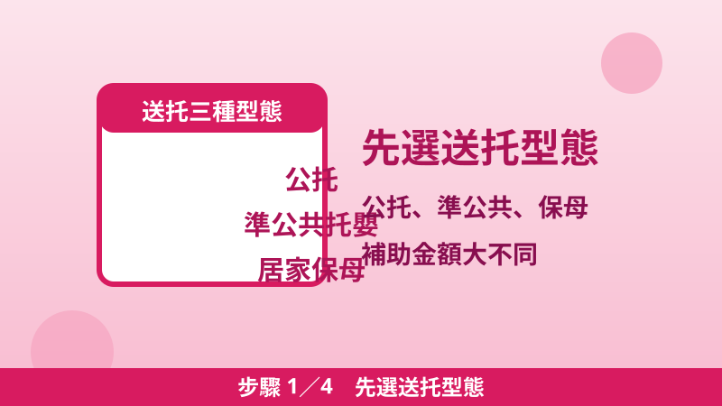
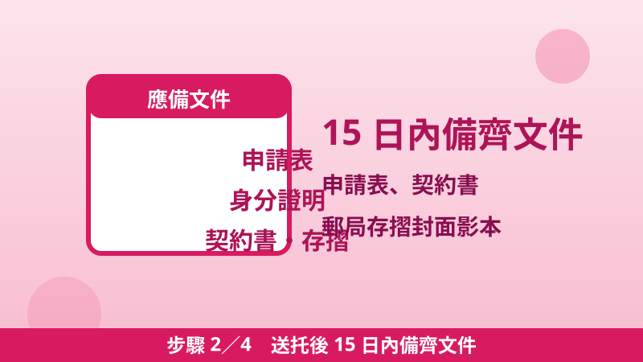
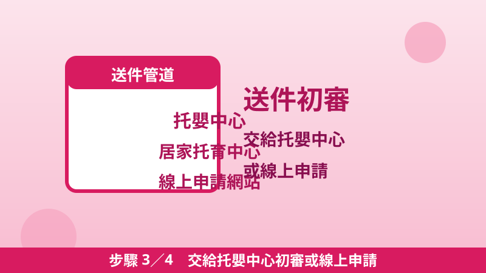
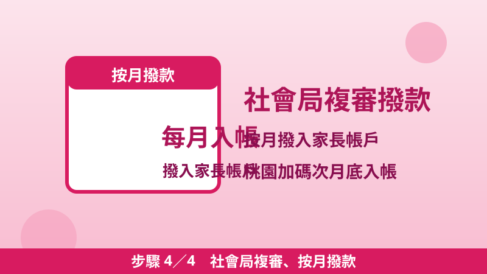

各縣市托育補助加碼比一比：台北友善托育每月再加 8,000 元、桃園自付 2,000 元起，申請 4 步驟
0–2 歲送托，中央托育補助每月 7,000–19,000 元是全國統一的打底，但各縣市再加碼的金額差很大：同樣送托準公共托嬰中心，台北市友善托育每月再加 8,000 元；桃園市一般家庭送托公托，每月平均自付只要 2,000 元起。先搞懂中央補助，再看戶籍地的加碼，才不會少領。
中央托育補助金額表（113 年 1 月 1 日起）
中央補助分兩種送托型態：公共化（公設民營托嬰中心、社區公共托育家園）和準公共化（私立托嬰中心、居家托育保母）。準公共化的補助比較高，表中金額已含第二胎、第三胎加發。
| 送托型態 | 身分 | 第 1 名子女 | 第 2 名子女 | 第 3 名以上子女 |
|---|---|---|---|---|
| 公共化 | 一般家庭 | 7,000 元 | 8,000 元 | 9,000 元 |
| 中低收入戶 | 9,000 元 | 10,000 元 | 11,000 元 | |
| 低收入戶 | 11,000 元 | 12,000 元 | 13,000 元 | |
| 準公共化 | 一般家庭 | 13,000 元 | 14,000 元 | 15,000 元 |
| 中低收入戶 | 15,000 元 | 16,000 元 | 17,000 元 | |
| 低收入戶 | 17,000 元 | 18,000 元 | 19,000 元 |
領中央補助的 5 個條件：未滿 2 歲送托公共化或準公共化托育服務（2–3 歲續留原單位可繼續領、總額不變）；每週托育 30 小時以上；未領育兒津貼；未經政府公費安置；不得指定一對一收托（發展遲緩、身心障礙等例外）。實際支付費用低於補助金額者核實支付。
台北市友善托育補助：準公共托嬰每月再加 8,000 元
台北市在中央補助之外，另設「友善托育補助」，三種送托型態的加碼金額不一樣，準公共托嬰中心和保母加最多：
| 送托型態 | 一般家庭每月加碼 | 有其他兄姊再加發 |
|---|---|---|
| 公辦民營托嬰中心 | 2,500 元 | 500 元 |
| 公辦民營社區公共托育家園 | 6,000 元 | 2,000 元 |
| 準公共托嬰中心及保母 | 8,000 元 | 2,000 元 |
送托公辦民營托嬰中心，中低收入戶與低收入戶另有分級：中低收入戶第一胎及第二胎 2,500 元、第三胎以上 1,500 元；低收入戶第一胎 1,500 元、第二胎 500 元、第三胎以上不予補助。資格是兒童未滿 3 歲、申請人與兒童都設籍台北市。中央加地方的總金額以不超過實際支付金額為原則。
送托非準公共的協力照顧單位也有補助：台北市另有「協力照顧補助」，一般家庭送托結訓或學歷保母每月 2,000 元、證照保母或托嬰中心 3,000 元；弱勢家庭 4,000／5,000 元。申請人最近一年綜合所得稅稅率須未達 20%，兒童與申請人皆設籍台北市。
桃園市友善托育補助：一般家庭公托自付 2,000 元起
桃園市的做法跟台北不一樣：官方直接公布一般家庭「家長每月平均自付額」，送托越公共化、自付越低：
| 胎次 | 公共托育設施 | 準公共居家托育人員（保母） | 準公共私立托嬰中心 |
|---|---|---|---|
| 第一胎 | 2,000 元 | 3,000 元 | 3,500 元 |
| 第二胎 | 1,000 元 | 2,000 元 | 2,500 元 |
| 第三胎以上 | 桃園一起養（請向桃園市婦幼發展局確認當期方案） | ||
申請資格是未滿 2 歲（含 2–3 歲）兒童送托合作托育公共及準公共服務提供者，委託人一方及幼兒設籍桃園市。符合公托第一序位（低收、中低收、特境、弱勢扶助等）或第二序位（雙胞胎或 3 位以上子女）資格的家庭，送托準公共服務提供者，家長負擔比照公共托育設施。桃園的友善加碼於次月底入帳。
其他縣市怎麼辦？
台中、新北、高雄等縣市的加碼方式各不相同，有的壓低公托收費、有的直接加碼補助金額。本篇只寫今天親自打開官方頁面核對過的台北市與桃園市；其他縣市的具體數字沒有官方來源佐證就不寫，申請前請直接向戶籍地社會局查詢最新金額。
圖文四步驟：從送托到按月領補助

步驟 1先選送托型態，確認資格
決定送托公托、準公共托嬰中心或保母：三種型態的中央補助與地方加碼金額都不同。確認兒童未滿 2 歲、每週托育 30 小時以上，且沒有同時領育兒津貼。

步驟 2送托後 15 日內備齊文件
托育事實發生日起 15 日內備齊文件：申請表、申請人與兒童身分證明、托育契約書、郵局帳戶封面影本，以及低收入戶、中低收入戶或第二名以上子女的證明文件。

步驟 3交給托嬰中心初審或線上申請
文件親送或掛號郵寄到送托的托嬰中心，或保母所屬的居家托育服務中心初審；也可以到托育補助費用線上申請網站送件。台北、桃園的地方加碼併同中央補助申請，不用另外跑一趟。

步驟 4社會局複審、按月撥款
初審無誤後由托嬰中心或居家托育服務中心彙整送社會局複審，核定後按月撥入家長帳戶。桃園市的友善加碼於次月底入帳。逾時送件者，補助日期改以收件日（文件備齊日）起算，晚送就少領。
常見問題
已經在領育兒津貼，可以改領托育補助嗎？
不能同時領。托育補助的條件之一就是未領取育兒津貼；送托後想改領托育補助，須先確認育兒津貼已停發，兩者擇一領。
送托後多久內要申請？
托育事實發生日起 15 日內備齊文件提出申請，補助日期以托育事實發生日起算；逾時送件，補助日期改以居家托育服務中心或托嬰中心收件日（文件備齊日）起算。送托日數超過半個月、未滿一個月者以一個月計，未滿半個月者以半個月計。
中央補助加地方加碼，會超過實際付的托育費嗎？
不會。台北市與桃園市官方都明載：準公共托育補助與地方加碼的總金額以不超過實際支付金額為原則，實際支付低於補助總額者核實支付。
📖 延伸閱讀：托育補助申請教學：未滿 2 歲送托，每月最高 13,000–19,000 元，送托 15 日內一定要申請 ／ 育兒津貼申請教學：0–5 歲每月 5,000–7,000 元，自己帶小孩就能領 ／ 2–6 歲幼兒園費用對照：公立 1,000／非營利 2,000／準公共 3,000 元上限＋私立領育兒津貼 5,000–7,000 元 ／ 2026 各縣市生育津貼一次看：彰化第 3 胎 8 萬最高、台北第 1 胎 4 萬，6 縣市對照＋中央 10 萬 ／ 育嬰留職停薪津貼 2026：月領投保薪資 8 成、最長 6 個月、父母可同時領
📎 資料來源
- 臺北市政府社會局常見問答「社會局辦理之托育費用補助內容有那些？」（中央托育補助金額、友善托育補助金額與受理單位、協力照顧補助）：dosw.gov.taipei
- 桃園市政府婦幼發展局「0-2歲托育補助」（中央補助金額表、桃園市友善托育自付額表、申請方式與應備文件）：dowcd.tycg.gov.tw
- 托育補助費用線上申請網站：cwisonline.sfaa.gov.tw
最後查證日期：2026-11-16
免責聲明：本文僅供參考，補助資格與金額以政府官方最新公告為準，申請前請至官方網站或洽受理機關確認。